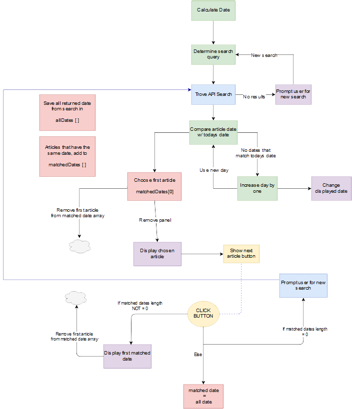
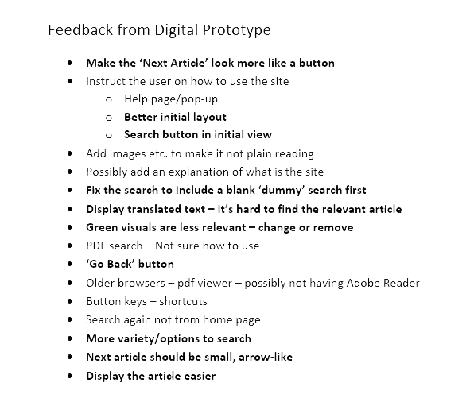
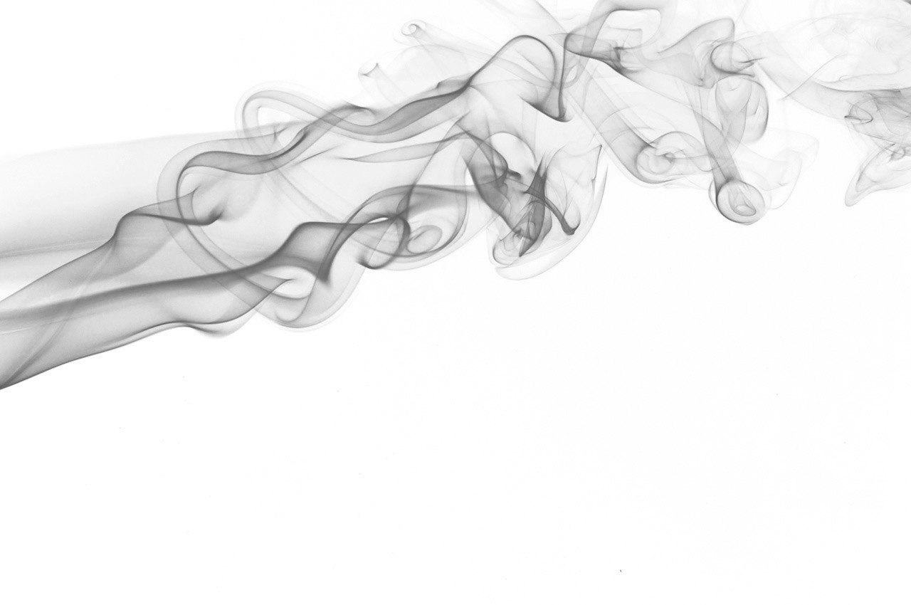
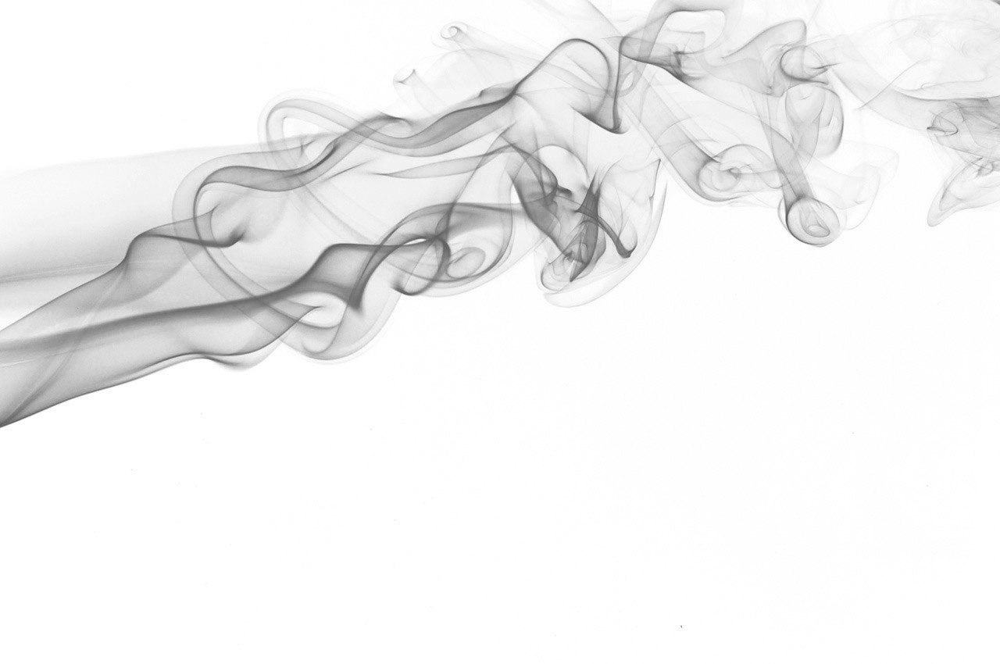

PROJECTS
Design Proposal
During the initial iterations of the design, 404ERROR wanted to extract the interest out of the dark theme. We knew that we wanted to singularly focus on the newspaper section of TROVE. We felt that this was the most relevant section to the team’s goal, and provided unique context to the applications user.
Being experienced with Photoshop, it was decided that I would complete the poster and Ross would handle the pitch. Although this was only partially realised, with the pitch being improvised between Ross and I, this section of the Major Project was completed to a highly acceptable standard.
Link to Poster

Work-in-Progress
Link to MVP
To create a functioning site, it was decided that I would personally create the MVP. Being the most capable in HTML, CSS and JavaScript; the key areas to complete were:

As the core designer up to this point in the project, it was interesting to see the commonality of the returned results era. It was clear that the application explored a pivotal time in Australia’s young history. The reoccurring themes presented a bleak social outlook during the early 1900’s. It was clear that the underlying principles of ‘Armageddon’ were a total possibility to the people of the time, creating a sense of uncertainty and respect in the applications user.
This created contextual awareness in the user, provided purpose to our project.
In a technical sense, the flow chart expressed below highlights the codes efficiency. I was having some trouble trying to figure out how to deal with the displaying the article. My original response from Trove only included the ‘article text’ field. Personally, this was unacceptable for an interactive site. Displaying articles from the above period, the charm was completely lost in translation to a digital formal. This was solved by using “reclevel=full” within the URL of the Trove call.

Final Delivery
The final delivery was a pivotal period for 404ERROR. By this stage, I pleaded the group to help me finish the project. It was then decided that I would run the testing session to understand the final features and the other members would do the code to touch up the MVP.
In terms of design, I think as a team, we produce a functional application. We obviously took the advice from the testing session, incorporating a navigation bar and convenient access to the search parameter.
Within the testing session, the MVP prototype was used to see how the user group would interact with the application. It was assumed that the respondents were familiar in the Trove API and general design principals; making them experts within the area. The session was run in an informal conversation format, using open ended questions to receive the participants qualitative feedback.
As a team, we found the conclusions deducted from the session were an invaluable resource. It was great to clear up any niggling design decisions. There were also great suggestions on new ideas the team had not full considered. The feedback has been summarised below.

Portfolio
The main purpose of the portfolio was to showcase the skills I have learnt within course. Although simple, I think the design represents my personal style well:
- Simplistic
- Functional
- Creative
The component that I am most proud of is the navigation bar. Creating a ‘bloggie’ style of website, I was finding it hard to deal with the navigation. The user of the site is considered to only interact with it on one occasion. Therefore, I decided to have a singular page design, utilising JavaScript to scroll the window to the desired section. The code I wrote to accomplish this was both elegant and efficient.

At the start of the year, I thought JavaScript was cult in Indonesia:
 

{kind=link}